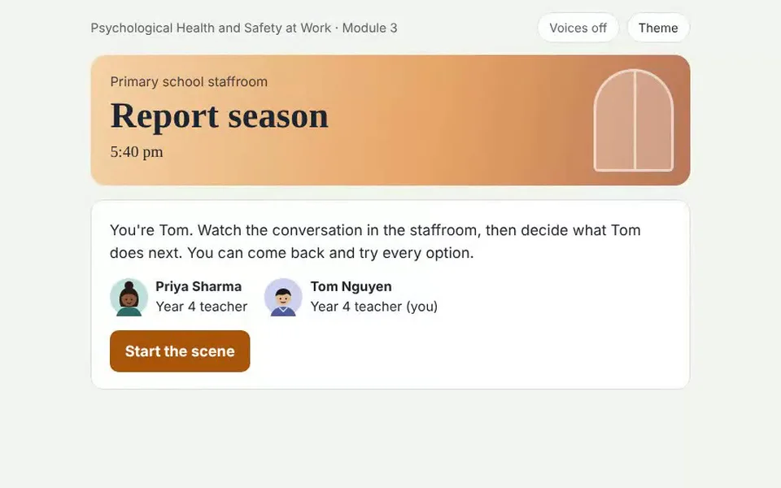

RS-01Scene card

Report season
- On screen
- Primary school staffroom, 5:40 pm. “You’re Tom. Watch the conversation in the staffroom, then decide what Tom does next.” Priya Sharma and Tom Nguyen, Year 4 teachers.
- Interaction
- Start the scene. Voices can be switched on or off, and there is a Theme toggle.
- Audio
- Optional character voices from the browser.